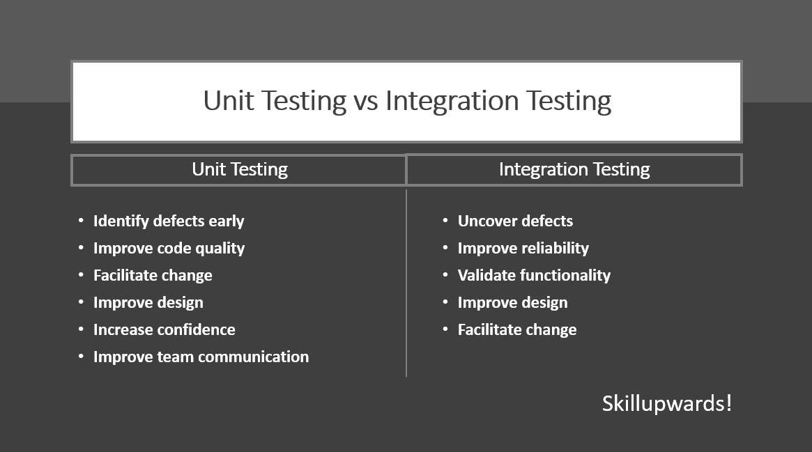

What is Unit Testing
Unit testing is a type of software testing that verifies the functionality of individual units or components of a software application. A unit is the smallest testable part of an application, such as a function or a class.
Unit tests are typically written by developers as they are writing code, and are used to validate that the code is functioning as expected. They are designed to test the functionality of a unit in isolation, without considering the rest of the application.
Unit tests are usually automated and can be run quickly and frequently, making them an effective way to catch defects early in the development process. They are also useful for regression testing, to ensure that changes to the code do not introduce new defects.
Unit testing can help to improve the overall quality and reliability of an application by identifying and fixing defects early on in the development process. It can also help to improve code maintainability, as it can make it easier to identify and fix defects in the future.
Benefits of Unit testing
There are several benefits to unit testing:
Identify defects early: Unit tests can help to identify defects early in the development process, making it easier and less costly to fix them.
Improve code quality: By writing unit tests, developers can ensure that their code is functioning as expected and meets the specified requirements. This can improve the overall quality and reliability of the application.
Facilitate change: Unit tests provide a safety net that can make it easier to make changes to the code without breaking existing functionality. This can improve code maintainability and make it easier to add new features to the application.
Improve design: Writing unit tests can help developers to think more carefully about the design of their code, as they need to consider how to test it effectively. This can lead to better-designed, more modular code.
Increase confidence: Unit tests provide confidence that the code is working correctly, which can be especially important when working on large, complex applications.
Improve team communication: Unit tests can serve as documentation for the code, helping team members to understand how it works and how to use it. This can improve communication within the team.
What is Integration Testing
Integration testing is a type of software testing that verifies the integration and interaction between multiple units or components of a software application. It is typically performed after unit testing and focuses on testing the integration between different units or components, rather than testing them in isolation.
Integration tests are used to ensure that the various units or components of an application work together as expected. This can involve testing the integration between different modules or subsystems, or between a front-end interface and a back-end database.
Integration testing can be approached using either black box or white box testing techniques, depending on the focus of the testing. Black box testing involves testing the integration between units or components without considering their internal implementation, while white box testing involves testing the integration while considering the internal implementation.
Integration testing is an important step in the software development process, as it helps to uncover issues that may not be detected by unit testing alone. It can help to improve the overall quality and reliability of an application by identifying and fixing defects that may not have been detected during unit testing.
Benefits of Integration Testing
There are several benefits to integration testing:
Uncover defects: Integration testing can help to uncover defects that may not be detected by unit testing alone. This is because it tests the integration and interaction between multiple units or components, rather than testing them in isolation.
Improve reliability: By identifying and fixing defects early in the development process, integration testing can help to improve the overall reliability of the application.
Validate functionality: Integration testing can help to validate that the various units or components of an application are functioning as expected when integrated together.
Improve design: Integration testing can help to identify issues with the design of an application, such as dependencies between units or components that may not have been apparent during unit testing. This can help to improve the overall design of the application.
Facilitate change: Integration testing can provide a safety net that makes it easier to make changes to the code without breaking existing functionality. This can improve code maintainability and make it easier to add new features to the application.
Overall, integration testing is an important step in the software development process that can help to improve the quality and reliability of an application. It is particularly useful for uncovering defects that may not be detected by unit testing alone, and can help to validate the functionality of an application when multiple units or components are integrated together.
Comparison of unit testing and integration testing
Here is a comparison of unit testing and integration testing:
| Unit Testing | Integration Testing |
|---|
| Definition | A type of testing that verifies the functionality of individual units or components of a software application. | A type of testing that verifies the integration and interaction between multiple units or components of a software application. |
| Purpose | To verify the correctness of individual units or components. | To verify the correctness of the integration and interaction between multiple units or components. |
| Scope of testing | Limited to a single unit or component. | Multiple units or components are tested together. |
| When to perform | Unit tests are typically performed during the development phase, before the integration testing phase. | Integration tests are typically performed after the unit testing phase. |
| What is tested | The functionality of individual units or components. | The integration and interaction between multiple units or components. |
| Testing approach | Black box testing, where the internal implementation of the unit or component being tested is not considered. | Black box or white box testing, depending on the focus of the testing. |
| Example | Testing a specific function in a class. | Testing the integration between a front-end interface and a back-end database. |
| Benefits | Can be run quickly and frequently. | Can uncover issues that may not be detected by unit testing alone. |
| Drawbacks | May not detect issues with the integration and interaction between units or components. | Can be more time-consuming and complex than unit testing. |
It's worth noting that both unit testing and integration testing are important steps in the software development process, and both serve different purposes. Unit testing helps to ensure the correctness of individual units or components, while integration testing helps to verify the integration and interaction between multiple units or components. Both approaches can help to identify and fix defects in the software, improving the overall quality and reliability of the application.